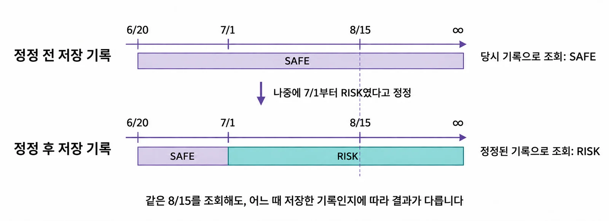
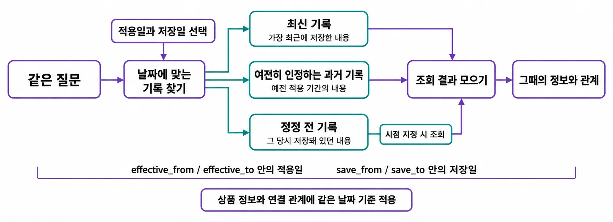
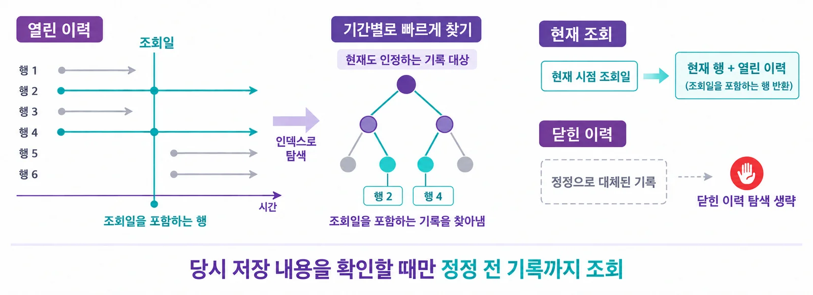
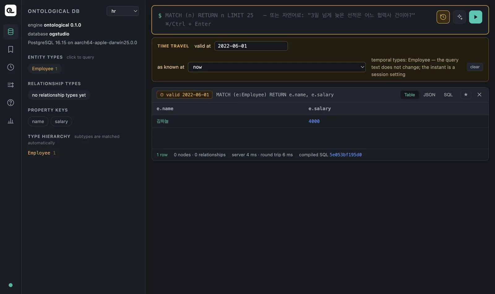
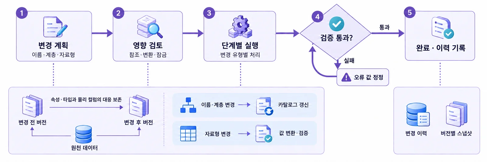

“그때 사실은 무엇이었나”와 “그때 우리는 무엇을 알고 있었나”는 다른 질문입니다. 두 개의 시간축을 이해하고, 같은 Cypher를 시점만 바꿔 다시 물어봅니다.
왜 시간이 두 개 필요한가#
인사팀이 김하늘 씨의 연봉을 이렇게 기록했다고 합시다.
- 2021년 1월부터 4,000 — 입사.
- 2024년 1월부터 4,600 — 인상. 실제 연봉이 바뀐 것(변경)입니다.
- 몇 달 뒤, 2024년 인상액이 사실 4,700이었다는 것을 알고 고칩니다. 실제 연봉은 그대로였지만 기록한 숫자가 틀렸던 것(정정)입니다.
이제 감사에서 묻습니다. “2025년 6월의 연봉은?” 답은 4,700입니다. 그런데 “정정하기 전에 낸 보고서에는 왜 4,600이라고 적혀 있었나?”라고 물으면, 그 시점에 우리가 알던 값을 재현할 수 있어야 합니다.
| 시간축 | 묻는 것 | Ontological DB 설정 |
|---|---|---|
| 유효 시간 (valid time) | 세상에서 언제 그것이 사실이었나 | valid_at |
| 시스템 시간 (system time, 기록 시간) | 우리가 언제부터 그렇게 기록하고 있었나 | system_at (as known at) |
두 축을 모두 가진 데이터를 바이템포럴(bitemporal)이라고 합니다.

같은 질의, 다른 시점#
Ontological DB에서는 시점을 질의 문장과 별도로 설정합니다. Cypher는 그대로 두고, “언제를 기준으로 볼지”만 바꿉니다.

- 관계에도 같은 시점을 적용합니다. 2022년 기준으로 물으면 2022년에 있던 관계만 따라갑니다.
- 현재를 물을 때는 현재 행만 읽고, 정정되기 전의 기록은 시점을 지정했을 때만 찾습니다. 그래서 이력이 많아도 평소 질의는 느려지지 않습니다.

포털의 시간 여행 막대#
포털 입력칸 오른쪽의 시계 버튼(⏱)을 누르면 TIME TRAVEL 막대가 열립니다.
| 칸 | 뜻 |
|---|---|
| valid at | 유효 시간. 2022-06-01처럼 날짜를 적습니다. |
| as known at | 시스템 시간. now 또는 이 그래프에 최근 일어난 쓰기의 “직후” 시각을 목록에서 고릅니다. |
시점을 정하면 입력칸 테두리가 노랗게 바뀌고, 결과 카드 위에 ⏱ valid 2022-06-01처럼 시점이 붙습니다. 해제하려면 「clear」를 누릅니다.

시간 버전은 타입마다 켭니다
이력을 남길 노드·관계 타입마다 시간 버전을 켜야 합니다. 시간 막대 오른쪽에 temporal types: Employee처럼 켜진 타입이 보입니다. 켜지 않은 타입은 시점을 정해도 현재 값을 답합니다. 예제의 가상 노드(원천 DB를 비춘 것)는 원천이 이력을 갖고 있지 않으므로 시간 여행의 대상이 아닙니다.
따라 하기 (고급, 선택) — 연봉 이력 만들기#
시간 버전을 켜고 “언제부터”를 지정해 쓰는 일은 현재 버전에서는 SQL 세션에서 합니다. 데이터베이스 수업에서 psql을 써 봤다면 따라 해 보세요. (macOS 기준. 건너뛰어도 다음 장을 진행하는 데 문제없습니다.)
1. 접속 정보 찾기. 앱 데이터 폴더(~/Library/Application Support/Ontological Studio/)의 ports.json에서 pg 포트를, secrets.json에서 pgPassword를 봅니다. 사용자는 og, 데이터베이스는 ogstudio입니다.
APP="/Applications/Ontological Studio.app/Contents/Resources/runtime/pg/bin/psql"
DATA="$HOME/Library/Application Support/Ontological Studio"
PORT=$(python3 -c "import json;print(json.load(open('$DATA/ports.json'))['pg'])")
export PGPASSWORD=$(python3 -c "import json;print(json.load(open('$DATA/secrets.json'))['pgPassword'])")
"$APP" -h 127.0.0.1 -p $PORT -U og -d ogstudio
관리자 계정입니다
og는 이 앱의 데이터베이스 관리자입니다. 아래 예제 외의 문장은 실행하지 마세요. 실수로 예제를 망가뜨렸다면 1장의 방법으로 처음 상태로 되돌릴 수 있습니다.
2. 그래프와 타입을 만들고 시간 버전을 켭니다.
SELECT og_create_graph('hr');
SELECT og_create_type('hr', 'Employee', 'entity');
SELECT og_add_property('hr', 'Employee', 'name', 'string'),
og_add_property('hr', 'Employee', 'salary', 'int');
SELECT og_enable_temporal('hr', 'Employee');
3. 세 번 기록합니다. SET LOCAL og.valid_from이 “언제부터의 사실인가”입니다. 트랜잭션이 끝나면 사라지므로 기록마다 따로 줍니다.
BEGIN; -- 2021년 입사
SET LOCAL og.valid_from = '2021-01-01';
SELECT og_cypher('hr', $$CREATE (:Employee {name: '김하늘', salary: 4000})$$);
COMMIT;
BEGIN; -- 2024년부터 인상 (변경)
SET LOCAL og.valid_from = '2024-01-01';
SELECT og_cypher('hr', $$MATCH (e:Employee {name: '김하늘'}) SET e.salary = 4600$$);
COMMIT;
BEGIN; -- 4600이 아니라 4700이었다 (정정)
SET LOCAL og.valid_from = '-infinity';
SELECT og_cypher('hr', $$MATCH (e:Employee {name: '김하늘'}) SET e.salary = 4700$$);
COMMIT;
정정의 '-infinity'가 핵심입니다. “유효 구간(2024년부터)은 그대로 두고 값만 고친다”는 뜻입니다. 이것을 '2024-01-01'로 주면 또 하나의 변경이 되어 버립니다.
4. 포털에서 물어봅니다. 포털을 새로 고치고 그래프를 hr로 바꾼 뒤, 질의는 언제나 같습니다.
MATCH (e:Employee) RETURN e.name, e.salary
| valid at | as known at | 결과 | 해석 |
|---|---|---|---|
| (비움) | now | 4700 | 지금 알고 있는 지금의 연봉 |
| 2022-06-01 | now | 4000 | 2022년의 연봉 |
| 2025-06-01 | now | 4700 | 정정까지 반영한 2025년의 연봉 |
| 2025-06-01 | “…SET e.salary = 4600” 직후 | 4600 | 정정 전 보고서가 알던 2025년의 연봉 |
| 2020-06-01 | now | (없음) | 입사 전에는 직원이 아니었다 |
네 번째 결과에서 바이템포럴의 장점을 확인할 수 있습니다. 값을 덮어쓰는 보통 데이터베이스에서는 “그때 왜 그렇게 판단했나”를 다시 볼 수 없습니다.
스키마도 이력을 남깁니다#
데이터뿐 아니라 스키마도 이력을 남깁니다. 속성 타입을 바꾸는 등의 스키마 변경도 계획 → 영향 검토 → 단계별 실행 → 검증 → 완료의 단계를 밟고 이력이 남습니다. 변환할 수 없는 값이 하나라도 있으면 완료되지 않습니다. 포털의 스키마 디자이너에서 변경을 계획하고 진행 단계와 이력을 볼 수 있습니다.

더 깊은 내용은 Ontological DB 소개를 참고하세요.
확인 문제
- 다음은 변경일까요, 정정일까요? ⓐ 7월 1일부터 협력사 등급이 1에서 2로 내려갔다. ⓑ 협력사 국가를 Korea로 잘못 적었는데 사실 Vietnam이었다.
- “2023년 감사 보고서를 낼 때 우리가 알던 2022년 연봉”을 물으려면 두 칸을 각각 무엇으로 정해야 하나요?
- 시간 버전을 켜지 않은 타입에
valid_at을 주고 질의하면 어떻게 될까요?
정답 보기
- ⓐ 변경 — 실제 등급이 바뀌었으므로
valid_from = '2026-07-01'. ⓑ 정정 — 처음부터 Vietnam이었으므로valid_from = '-infinity'로 값만 고칩니다. - valid at = 2022년의 날짜, as known at = 2023년 감사 보고서를 낸 시각(그 직전의 쓰기).
- 시점과 상관없이 현재 값을 반환합니다. 이력을 남기지 않았으니 돌아갈 과거가 없습니다.